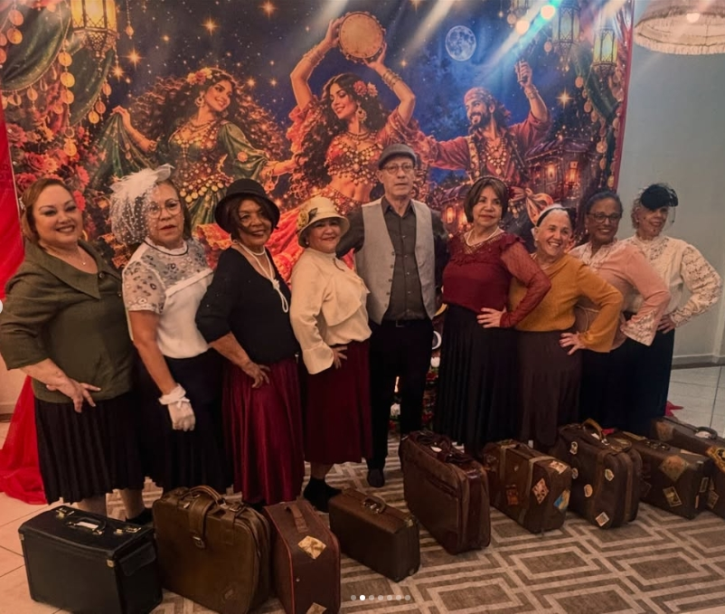
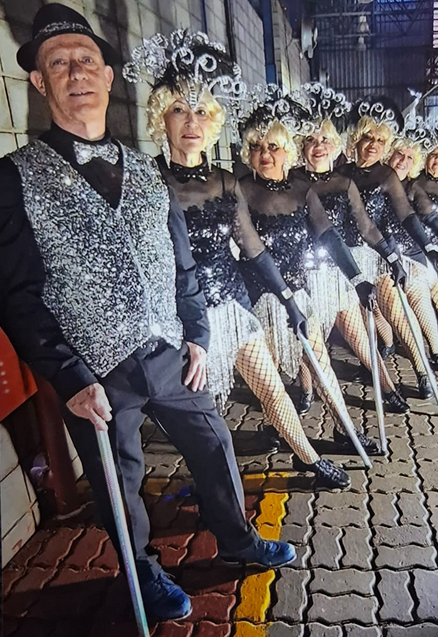
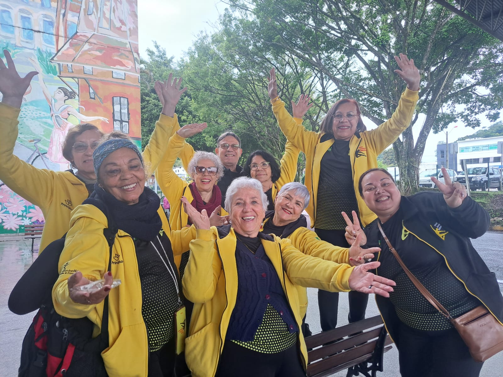

Quem somos
Muitas histórias.
Uma criação coletiva.
Parte do elenco se conheceu na preparação para os Jogos Regionais do Idoso, em Sorocaba. Quando aquela formação chegou ao fim, as integrantes escolheram seguir dançando juntas. Assim nasceu um grupo que passou a organizar seus próprios ensaios, figurinos e viagens.
Nos ensaios, o elenco aprende passos, trabalha a marcação musical e refina os movimentos sob orientação de Vítor Gil. Cada intérprete encontra sua maneira de dançar, e o grupo trabalha para que essas diferenças ganhem unidade em cena.

Primeiros registros em 2015
Cada encontro,
um capítulo.
Cada palco, uma história.
Dos primeiros ensaios em Sorocaba às apresentações em festivais no Brasil e no exterior, fotografias e programas guardam momentos de um trabalho que cresceu a cada novo palco.
Percorra nossa trajetória
Nossa missão
Criar. Compartilhar.
Continuar dançando.
Criamos e apresentamos obras de dança com intérpretes 60+. Queremos manter a formação artística do elenco, levar o repertório a novos públicos e preservar os registros de quem construiu essa história.
Explore nosso repertórioNossa essência em prática
Princípios do
Viva Dança.

Presença artística
Pessoas 60+ criam, interpretam e dão forma ao que o público vê em cena.
Continuidade
Ensaiar, criar e voltar ao palco faz parte do trabalho ao longo do ano.
Compromisso coletivo
Cada integrante contribui para o trabalho em cena e para a organização do grupo.
Aprendizagem
Da dança popular ao sapateado, cada linguagem traz um novo desafio.
Cuidado coletivo
O elenco trabalha com atenção à técnica e às possibilidades de movimento de cada pessoa.
A força do coletivo
Cada pessoa importa.
Juntos, somos dança.
Cada intérprete traz uma história e um jeito de estar em cena. Conheça as pessoas que dão forma ao trabalho do Viva Dança e acompanhe onde o grupo se apresenta.

Vamos conversar
Há sempre espaço
para um novo encontro.
Estamos abertos a convites e parcerias que ajudem o Viva Dança a criar novas obras, circular com seu repertório e preservar seu acervo.
Fale com o Viva Dança